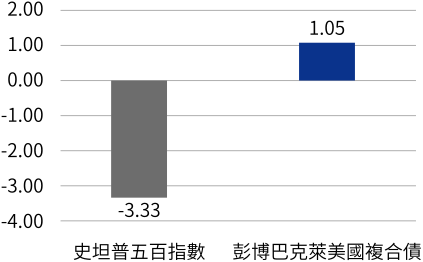
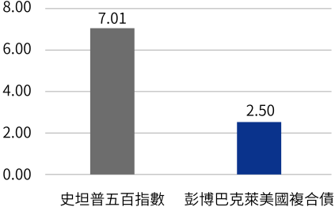
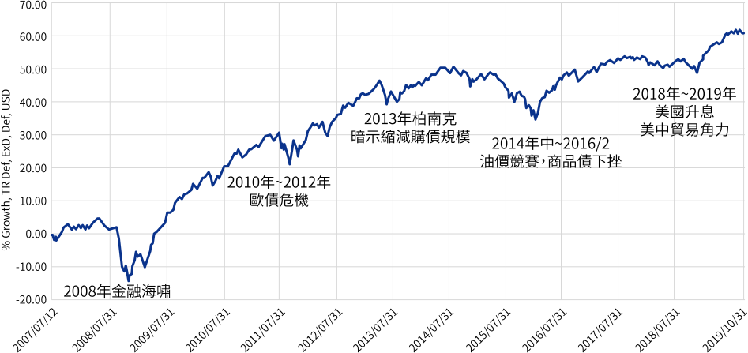
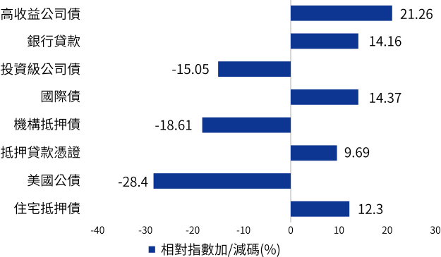
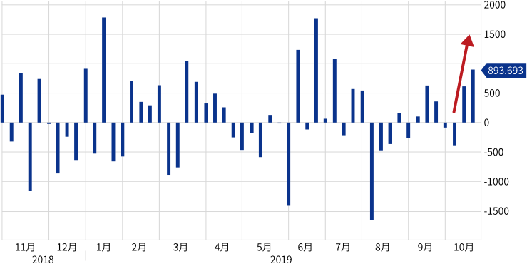
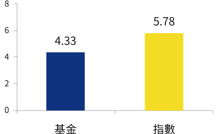
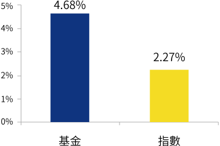

富蘭克林坦伯頓精選收益基金(本基金有相當比重投資於非投資等級之高風險債券且基金之配息來源可能為本金)

市場亂亂亂，投資怎麼辦？
您需要低波動投資神器
「美元複合債基金」！
「美元複合債基金」！
理由一
資金趨吉避凶，靠攏美元才安全
震盪局勢下，資金會避開匯率波動較大的新興市場當地貨幣流向美元資產，此時靠攏國際主流貨幣美元，可降低匯市波動對基金淨值的影響。
理由二
複合債歷經市場波濤考驗，多空皆宜
複合債分散投資各類型債券，VIX指數上揚時市場恐慌情緒升溫，複合債展現抗壓性逆勢收紅；VIX指數下滑時市場情緒較正向，複合債亦可分享合理報酬。
VIX上揚季度之股債指數平均報酬(%)
VIX下滑季度之股債指數平均報酬(%)

資料來源：彭博資訊，原幣計價總報酬，2008年截至2019/9/30，彭博巴克萊美國複合債指數，史坦普500指數。
理由三
歷史經驗顯示，現在配置美元複合債正是時機
降息循環
美元複合債表現優於美股
| 主要股債市指數 | 首次降息/平均報酬率 | ||||
| 前一個月 | 後一個月 | 後三個月 | 後六個月 | 後一年 | |
| 史坦普五百指數 | 3.9% | 0.8% | -10.7% | -9.6% | -15.6% |
| 彭博巴克萊美國複合債 | 2.0% | 1.9% | 2.5% | 4.0% | 6.65% |
資料來源：彭博資訊，原幣計價總報酬，過去兩次聯準會降息循環：首次降息日以2001/1/3及2007/9/18為準。
殖利率曲線倒掛
美元複合債表現相對出色
| 主要股債市指數 | 殖利率曲線倒掛後/平均報酬率 | |||
| 前一個月 | 後六個月 | 後一年 | 後兩年 | |
| 史坦普500 | 2.1% | 3.8% | 5.8% | 11.4% |
| 彭博巴克萊美國複合債 | 1.4% | 2.9% | 5.7% | 11.3% |
| ICE 美林全高收 | 0.3% | 0.6% | 2.1% | 4.4% |
| ICE 美林新興當地債* | 3.1% | -0.2% | -0.2% | 18.8% |
| 富時美國投資級債 | 0.3% | 2.0% | 4.6% | 9.9% |
| ICE 美林美國GNMA | 1.4% | 2.6% | 5.8% | 12.1% |
| ICE 美林全球政府債 | 0.1% | 3.8% | 4.2% | 4.3% |
資料來源：彭博資訊，計算過去三次十年及兩年債殖利率曲線倒掛日(2005/12、2000/02、1998/05)之後的期間總報酬。*ICE 美林新興當地債指數因成立時間較晚，僅計入2005/12一次。
哪些人應該配置
「美元複合債基金」？
「美元複合債基金」？
已配置新興市場債券的朋友
透過佈局美元資產，可以分散整體投資組合的匯率波動風險，達到資產配置的效果。
第一次想買債券基金的朋友
一次購足各類型的債券，讓專業經理團隊因應市場狀態調整投資組合，進可攻退可守，相當適合穩健型/保守型的投資朋友。
抗波動享收益首選
富蘭克林坦伯頓精選收益基金(本基金有相當比重投資於非投資等級之高風險債券且基金之配息來源可能為本金)
本基金特色
1站購足
一站式購足各類債券，專業的經理團隊替你配置在企業債、政府債及貸款，實現分散風險、靈活調整
2大優勢
- 透過高收益債和高評級債兩大配置，兼顧收益與降低信用風險
- 抗波動+享收益
3大策略
- (+)加碼美國高收益債、銀行貸款
- (-) 減碼美國公債
- (-) 降低存續期間及波動度
資料來源：富蘭克林坦伯頓基金集團，基金A股美元月配息股份，配置截至2019/9月底
資產組合動態調整，以靈活應市場萬變
本基金美元月配息股份成立以來的投資績效(%)

資料來源：Lipper，美元計價，基金美元月配息股份成立於2007/7/12，截至2019/10/31。基金過去績效不代表未來獲利之保證。
2009
~
2010
年
看好美國經濟從金融風暴中復甦、企業活動與聯準會利率正常化趨勢，降低投資等級債、維持加碼高收益債
2011
年
美國債務上限危機，基金率先降低美國部位，轉向非美政府債
2012
~
2014
年
美國QE、歐債危機緩解，2014年經濟復甦QE逐漸退場，因此降低現金、增加高收益債
2016
~
2018
年
看好美國經濟成長、稅改、財政政策題材，加碼高收益債、降低現金
2019
年至今
市場消息紛亂但美國經濟溫和成長，低利環境下加碼高收益債、房地產抵押債，減碼美國公債
現階段基金與對應指數的主要資產配置（%）

資料來源：富蘭克林坦伯頓基金集團，彭博巴克萊美國綜合債券指數，截至2019/9月底，已計現金。※數字反映投資組合所持有的衍生性金融商品或相關標的資產，且可能因四捨五入、使用衍生性商品、未結算交易或其他因素而導致總計值不為100%或有些為負數。
經理團隊精挑細選找收益
高收益債
爭取較高債息
浮動利率貸款
以低存續期間，降低利率風險
房地產抵押債
降低國際關稅紛爭的影響，同步分享美國房市強勁成長動能
美國公債
現階段美公債價位偏高，加上美國就業市場強勁，減碼操作可防範下行風險
加碼高收益債 低利環境下高收益有支撐
自2019年7月聯準會降息後，具高息優勢的高收益債再度受到資金青睞；
而本基金的高收益債產業配置重點，包含價位已經接近2018年12月低點的能源業、產業體質好轉加上有併購題材發酵的電信業等，又更具成長潛力。
高收益債ETF近一年資金流量

資料來源：彭博資訊，2018/10/26-2019/10/19。
操作策略有成，基金綜合表現優於指數
持債之平均存續期間（年，越 低 越好）
持債之平均到期殖利率（%，越 高 越好）

資料來源：富蘭克林坦伯頓基金集團，彭博巴克萊美國綜合債券指數，截至2019/9月底。基金到期殖利率不代表 基金總報酬率或配息率。
榮獲理柏基金評等保本能力最高級榮耀
保本能力評級以歷史數據為依據，是衡量基金面對震盪情境中下跌風險的指標，而5級即為最高等級，代表該基金的保本能力表現在同類型中具領先地位。
| 理伯基金 | 10年 | 整體 |
| 保本能力評級 | 5級 | 5級 |
資料來源：理柏資訊，截至2019/10月底；同類型基金為理柏台灣分類-環球債券型基金。理柏基金評等︰5代表同類型基金的前20%，4代表同類型基金的20–40%、3代表同類型基金的40-60%，其餘以此類推，保本能力評級高基金並非保本或無下跌風險之保證。
探索更多本基金投資利基
- 穩健保守型投資首選
- 以多元的美元複合債配置降低投資組合之波動，過去三年波動風險2.84%*
- 動態配置追求高債息機會，基金持債平均到期殖利率4.68%，高於彭博巴克萊美國綜合債券指數的2.27%**
- 側重美元計價資產，降低匯兌風險，基金貨幣部位約九成為美元
資料來源：富蘭克林坦伯頓基金集團，*理柏資訊，波動風險為過去三年原幣月報酬率之年化標準差，截至2019/9月底；**彭博巴克萊美國綜合債券指數，截至2019/9月底。基金到期殖利率不代表 基金總報酬率或配息率。